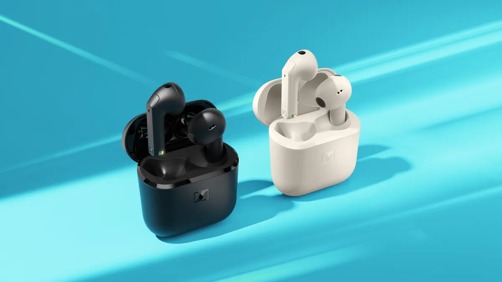
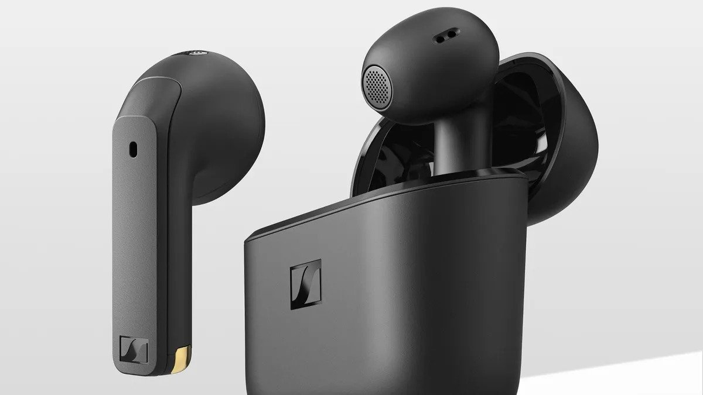

Tai nghe Sennheiser Accentum Open ra mắt: Driver 11mm, pin 28 giờ, giá chỉ 3.37 triệu đồng
Tai nghe mới của Sennheiser gây ấn tượng với thiết kế độc đáo, thời lượng pin tuyệt vời và giá phải chăng.
Sennheiser mới đây vừa ra mắt một cặp tai nghe nhét tai mới, có tên gọi là Accentum Open. Sản phẩm có thiết kế “không bịt kín" vừa vặn với tai thay vì nhét sâu vào lỗ tai của bạn.
Trong những năm gần đây, tai nghe nhét tai thiết kế mở đang khá thịnh hành nhờ sự xuất hiện của Bose Ultra Open Earbuds và Sony LinkBuds Open. Panasonic cũng đang tham gia với sản phẩm RB-F10 mới được công bố gần đây.
Accentum Open có vẻ như đi theo xu hướng như những tai nghe nhét tai thiết kế mở gần đây khác, với mỗi bên tai nặng khoảng 4.4g. Sennheiser hứa hẹn rằng, sự kết hợp giữa trọng lượng nhẹ và thiết kế không gây khó chịu của tai nghe khiến Accentum Open "thoải mái khi sử dụng".
Accentum Open cung cấp thời gian nghe lên đến 6.5 giờ chỉ với một lần sạc và tổng cộng là 28 giờ khi kết hợp với hộp sạc. Tai nghe mới của Sennheiser cũng hỗ trợ sạc nhanh, mang tới 1.5 giờ sử dụng chỉ với 10 phút sạc. Sản phẩm được bán với giá 129.95 USD (khoảng 3.37 triệu đồng) tại Mỹ với hai tùy chọn màu là kem và đen.
Tai nghe này còn có micro chùm tia kép cho "cho chất lượng cuộc gọi ấn tượng", lọc tiếng ồn xung quanh để có cuộc trò chuyện rõ ràng và dễ hiểu hơn. Nó còn hỗ trợ kết nối Bluetooth đa điểm để chuyển đổi liền mạch giữa nhiều thiết bị như máy tính xách tay và điện thoại thông minh.
Accentum Open cung cấp thời gian nghe lên đến 6.5 giờ chỉ với một lần sạc và tổng cộng là 28 giờ khi kết hợp với hộp sạc. Tai nghe mới của Sennheiser cũng hỗ trợ sạc nhanh, mang tới 1.5 giờ sử dụng chỉ với 10 phút sạc. Sản phẩm được bán với giá 129.95 USD (khoảng 3.37 triệu đồng) tại Mỹ với hai tùy chọn màu là kem và đen.
Ngày: 12/05/2025